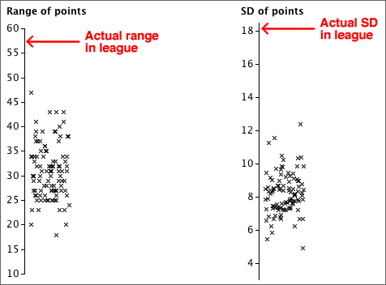

English Premier Soccer League in 2008/9
The table below shows the points gained by all teams in the English Premier Soccer League at the end of the 2008/9 season.
| Team | Pts | |
| 1 | Manchester United | 90 |
| 2 | Liverpool | 86 |
| 3 | Chelsea | 83 |
| 4 | Arsenal | 72 |
| 5 | Everton | 63 |
| 6 | Aston Villa | 62 |
| 7 | Fulham | 53 |
| 8 | Tottenham Hotspur | 51 |
| 9 | West Ham United | 51 |
| 10 | Manchester City | 50 |
| 11 | Wigan Athletic | 45 |
| 12 | Stoke City | 45 |
| 13 | Bolton Wanderers | 41 |
| 14 | Portsmouth | 41 |
| 15 | Blackburn Rovers | 41 |
| 16 | Sunderland | 36 |
| 17 | Hull City | 35 |
| 18 | Newcastle United | 34 |
| 19 | Middlesburgh | 32 |
| 20 | West Bromwich Albion | 32 |
Evidence of skill?
A quarter of the matches in 2008/9 were draws, so we will conduct a simulation with a model in which all teams are equally matched and:
From each simulated league, we will summarise the spread of points at the end of the season using both their range and their standard deviation. After 100 simulated leagues, these measures of spread are shown below.

The actual spread of points in the 2008/9 league was much higher than those that appeared in the simulations with equally matched teams, indicating that there was indeed a difference between the skill levels of the best and worst teams in the league.